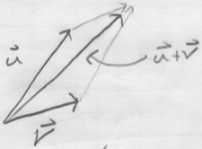
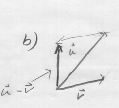
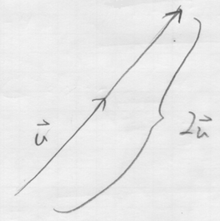
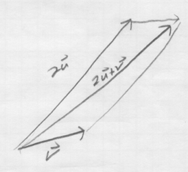
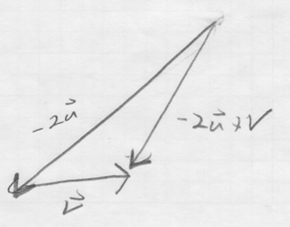
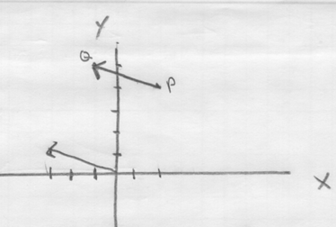
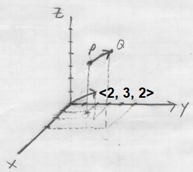

Homework Section 12.3 - Answers
-
- `vec(AC)`
- `vec(CA)`
- `vec(DB)`
-






-

-

-
- `bb(u) + bb(v) = << 0, 2, -13 >>`, `bb(u) - bb(v) = << -4, 8, -1 >>`, `2bb(v) = << 4, -6, -12 >>`, `5bb(u) - 2bb(v) = << -14, 31, -23 >>`, `||bb(u)|| = sqrt(78)`
- `1/sqrt(78)<< -2, 5, -7 >>`
- `1/7<< 2, -3, -6 >>`
- `5/7 << 2, -3, -6 >>`
- `bb(u) + bb(v) = 5 bb(i) - bb(j) + 4 bb(k)`, `bb(u) - bb(v) = -7 bb(i) - 9 bb(j) + 10 bb(k)`, `2bb(v) = 12 bb(i) + 8 bb(j) - 6 bb(k)`, `5bb(u) - 2bb(v) = -17 bb(i) - 33 bb(j) + 41 bb(k)`, `||bb(u)|| = 5sqrt(3)`
- 366.35 mph, N84.46°E
- 16.05 pounds, 88.78°
-
- `[[-2, 0, 10], [-1, 8, 9]]`
- `[[6, -6, 6], [-9, -6, -9]]`
- `[[6, -9, 24], [-15, 3, 0]]`
- `[[14, -15, 20], [-23, -11, -18]]`
- `3 xx 4`